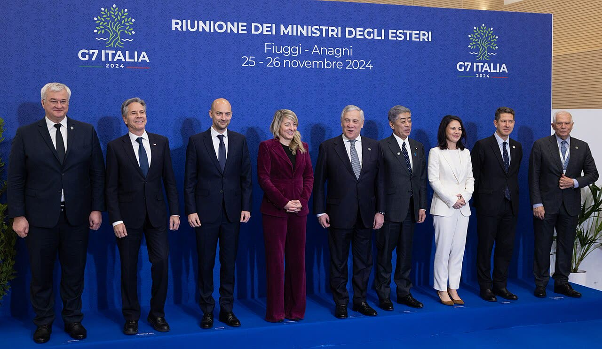

Frigoriferi hackerati, Parigi accusa l'Iran. Tajani: in Italia filorussi
Parigi e Roma accusano governi o gruppi diversi, e possono avere ragione entrambe: ma finora nessuno ha mostrato le prove, e «certamente» le richiede.
Redazione Contrappunto · aggiornato il 12.11.2026 · 2 rettifiche


Nella notte tra l'11 e il 12 ottobre degli hacker hanno preso il controllo del software che regola la temperatura di frigoriferi e congelatori in circa 700 dei 10.000 supermercati francesi: tonnellate di cibo buttate e, in alcuni casi, frigoriferi andati a fuoco (DW). Attacchi simili hanno colpito poi supermercati in altri paesi europei, Italia compresa secondo La Vanguardia. Lunedì 9 novembre, a margine del G7 dei ministri degli Esteri a Parigi, il francese Jean-Noël Barrot ha accusato l'Iran. Lo stesso giorno, a chi gli chiedeva da dove arrivino gli attacchi della guerra ibrida (campagna di attacchi informatici e di altro tipo, senza guerra dichiarata) contro l'Italia, il ministro degli Esteri italiano Antonio Tajani ha risposto che quelli che hanno riguardato l'Italia sono «certamente di hacker filorussi». Non ha parlato di frigoriferi, nel video letto. Conta perché lo Stato deve proteggere i cittadini e le imprese anche online, e perché chi dice «è stato quello» dovrebbe poterlo dimostrare.
Vedi di più: 5 parole spiegate, cosa si racconta
Cosa si raccontaPer BBC, DW e La Vanguardia la tesi è quella di Parigi: dietro c'è il Corpo delle Guardie della rivoluzione islamica (IRGC), l'esercito ideologico del regime iraniano. Per BBC il governo francese non ha detto come ci è arrivato. Libero riporta il video con Tajani sui filorussi; Domani, nel titolo, mette le due accuse una accanto all'altra («La Francia accusa l'Iran, l'Italia i filorussi»). La Vanguardia ricorda che i sospetti iniziali erano proprio sui filorussi e che il Cremlino nega. [BBC News] [Deutsche Welle] [La Vanguardia] [Libero] [Domani]
- IRGC (Guardie della rivoluzione)
- Il corpo armato scelto del regime iraniano, che risponde direttamente alla guida religiosa del paese (DW).
- Shahid Kaveh
- Nome di un gruppo di hacker considerato alle dirette dipendenze del regime iraniano; per la procura di Parigi è un'unità di attacco informatico legata al centro elettronico e cyber dell'IRGC (BBC). Teheran non ne ha mai riconosciuto l'esistenza; il nome sembra venire da Mahmoud Kaveh, comandante delle Guardie morto nel 1986 nella guerra Iran-Iraq (Al Jazeera).
- Hacker filorussi
- Gruppi come NoName057(16) e Z-Pentest, che si dichiarano a favore della Russia; due gruppi filorussi hanno rivendicato gli attacchi mercoledì 4 novembre, ma per BBC pochi ci hanno creduto (BBC, La Vanguardia).
- Attribuzione
- L'atto con cui uno Stato dice pubblicamente chi ha fatto un attacco informatico; è difficile, perché chi attacca può nascondere da dove agisce (BBC).
- Danfoss
- Azienda danese che fornisce il software con cui i negozi gestiscono a distanza i frigoriferi: è quello preso di mira (BBC).
- Lunedì 9 novembre la Francia ha accusato le Guardie della rivoluzione iraniane degli attacchi ai frigoriferi dei supermercati, ha convocato l'ambasciatore iraniano e chiede sanzioni europee; la procura di Parigi ha aperto un'inchiesta su un capo hacker e due vice (BBC, DW).
- Lo stesso giorno, a chi gli chiedeva da dove arrivino gli attacchi della guerra ibrida contro l'Italia, Tajani ha risposto «certamente» hacker filorussi, senza citare i frigoriferi né portare prove; BBC scrive che neanche Parigi ha spiegato su cosa si basa la sua accusa (BBC, Libero).
- Martedì 10 novembre il ministero degli Esteri iraniano ha respinto le accuse come infondate e minaccia contromisure se arriveranno sanzioni (DW, BBC, Al Jazeera).
BBC, DW e La Vanguardia raccontano l'accusa di Parigi: Iran, con un'inchiesta aperta a nome di un capo hacker. Libero riporta Tajani, che sugli attacchi alla guerra ibrida contro l'Italia dice «certamente» filorussi. Domani mette le due accuse nello stesso titolo. Delle testate lette, nessuna osserva che le due tesi non si escludono: l'Iran può aver colpito i frigoriferi e i filorussi altri bersagli. Teheran, il 10, nega tutto. Restano tesi di governo: BBC scrive che Parigi non ha spiegato come ci è arrivata, e nel video Tajani non porta prove. Se Roma vuole essere creduta, dica su cosa si basa. [1] [2] [3] [4] [5] [6] [7]
La verifica punto per punto6 passaggi, 8 fonti
Qui sotto ogni cosa scritta sopra, una per una, con le fonti. Confermato: lo dice un documento originale o più fonti lette. Plausibile: lo riportano fonti serie, ma non abbiamo letto l'originale. Discordante: le fonti danno numeri diversi, e diciamo quali. Ipotesi e Opinione sono il nostro ragionamento, separato dai fatti.
Cosa dice Parigi (e cosa non dice)
Il ministro degli Esteri francese Jean-Noël Barrot ha attribuito l'attacco all'IRGC iraniano, lo ha definito «unprecedented» per dimensioni e per «level of aggression», ha convocato l'ambasciatore iraniano e annunciato sanzioni europee contro i responsabili (BBC, DW). La procuratrice di Parigi Laure Beccuau ha aperto un'inchiesta sul capo dell'unità Shahid Kaveh e sui suoi due vice (BBC, DW). Per BBC il governo francese non ha detto come è arrivato alla conclusione; il 9 l'Iran non aveva ancora risposto ufficialmente, solo alcuni media iraniani negavano (BBC). Per La Vanguardia l'accusa segue una notizia di Reuters su fonti giudiziarie e una fonte anonima citata da Le Figaro («i servizi francesi sono in grado di imputare l'attacco»); La Vanguardia scrive anche di un mandato di cattura internazionale; il 10 DW riporta che la procura ha chiesto mandati di arresto per due responsabili di Shahid Kaveh.
Cosa dice Roma
Il 9 novembre Tajani, vicepresidente del Consiglio e ministro degli Esteri, a margine del G7 a Parigi, a chi gli chiedeva da dove arrivino gli attacchi della guerra ibrida contro l'Italia, ha risposto: «Quelli che hanno riguardato l'Italia sono certamente di hacker filorussi» (Libero, video Agenzia Vista). Nel testo letto non cita i frigoriferi né porta elementi a sostegno. Due gruppi filorussi hanno rivendicato gli attacchi ai frigoriferi mercoledì 4 novembre, ma per BBC «few believed them»; per La Vanguardia i sospetti iniziali erano su NoName057(16) e Z-Pentest, e il Cremlino nega ogni legame (BBC, La Vanguardia).
Quali paesi, e quante sedi
Gli elenchi dei paesi colpiti dopo la Francia non coincidono: BBC cita Belgio, Lussemburgo, Svezia, Irlanda, Paesi Bassi, Estonia e Finlandia; La Vanguardia cita Regno Unito, Germania, Italia, Portogallo e Paesi Bassi. Per BBC e DW non è noto se gli attacchi siano collegati.
La risposta di Teheran
Martedì 10 novembre il ministero degli Esteri iraniano ha respinto le accuse con un comunicato, tradotto in modi diversi: «baseless and one-sided» per DW, «baseless and hostile» per BBC, «baseless and biased» per Al Jazeera. Teheran avverte che «not hesitate», non esiterà, a prendere misure se arriveranno sanzioni, e accusa Parigi di scaricare fuori i propri fallimenti (DW). Il comunicato non nomina Shahid Kaveh (Al Jazeera).
Cos'è Shahid Kaveh
Per il rapporto dei servizi francesi, citato da Al Jazeera, Shahid Kaveh agisce attraverso gruppi di facciata che si presentano come hacker indipendenti, come «CyberAveng3rs» e «Cyber Isnaad Front», incaricati di rivendicare alcuni attacchi; il rapporto indica tre presunti responsabili, due dei quali già sanzionati dagli Stati Uniti per legami con l'unità informatica delle Guardie. Sono valutazioni di intelligence: il rapporto non l'abbiamo letto.
Il nostro punto
Parigi ha un'inchiesta con dei nomi, anche se non ne mostra gli elementi; Roma, finora, una frase a margine di una riunione. Le due accuse possono anche essere vere insieme, ma per ora sono tesi di governo. La cosa che spetta allo Stato è dire con prove chi ci attacca: la procedura nazionale di attribuzione prevista dalla Strategia di cybersicurezza, a fine 2025 ancora a zero secondo il nostro pezzo del 9 novembre, va scritta, prima delle sanzioni e prima di dire «certamente».
Fonti8, tutte con il link
- France accuses Iran of supermarket fridge hacking (9 novembre 2026; aggiornato il 10 come «Iran rejects French claims it was behind supermarket fridge hacking») (BBC News) · consultata il 10.11.2026
- French officials blame Iran for supermarket fridge hacking (9 novembre 2026) (Deutsche Welle) · consultata il 10.11.2026
- Francia acusa a Irán del ciberataque contra las neveras de supermercados (9 novembre 2026) (La Vanguardia) · consultata il 10.11.2026
- Tajani: In Italia hacker filorussi. Attacchi contemporanei in Europa, c'è un coordinamento (9 novembre 2026) (Libero) · consultata il 10.11.2026
- La Francia accusa l'Iran, l'Italia i filorussi, Tajani: «C'è un coordinamento tra hacker» (9 novembre 2026) (Domani) · consultata il 10.11.2026
- Iran denies role in fridge hack, France summons ambassador (10 novembre 2026) (Deutsche Welle) · consultata il 10.11.2026
- What is Shahid Kaveh, the Iran cyberunit tied to France’s fridge hacking? (10 novembre 2026) (Al Jazeera) · consultata il 10.11.2026
- Iran rejects France's 'baseless accusations' on fridge cyberattacks (11 novembre 2026) (Euronews) · consultata il 12.11.2026
- 10.11.2026: Aggiornamento della sera: aggiunte la smentita ufficiale dell'Iran del 10 novembre (DW, BBC, Al Jazeera, con le tre traduzioni diverse del comunicato) e una scheda su Shahid Kaveh (Al Jazeera). Corretti due passaggi del primo blocco superati dai fatti: l'Iran ora ha risposto ufficialmente, e DW riporta la richiesta di mandati di arresto per due responsabili, che prima scrivevamo di non trovare in BBC e DW. La citazione di Barrot nel primo blocco è riallineata al testo della BBC, che nel frattempo è stato aggiornato e non contiene più la frase intera.
- 12.11.2026: Aggiornamento: Euronews (con AFP) riporta la risposta di Teheran e l'accusa francese. Il ministero degli Esteri iraniano «categorically rejects the French government's baseless and one-sided accusations»; il ministro Abbas Araghchi su X: «Unable to manage fridges let alone addressing grievances of its people, French government is shifting blame for its failures onto others». Barrot, per Euronews, dice che Parigi «rule nothing out» e prenderà misure, anche non rese pubbliche, per scoraggiare nuovi attacchi; l'Unione europea assicura una «swift and united response» dopo il confronto con gli Stati membri. Euronews scrive che incidenti simili sono stati segnalati in almeno 10 altri paesi europei: è una stima che si aggiunge agli elenchi discordanti già nel pezzo. Le autorità francesi citano come precedenti l'attacco a Charlie Hebdo del 2023 e le azioni ostili durante i Giochi del 2024, secondo Euronews. Nessuna prova pubblica dell'attribuzione all'Iran è nelle fonti lette: restano tesi di governo.
Testo preparato con strumenti di intelligenza artificiale e pubblicato senza revisione umana. Come lavoriamo